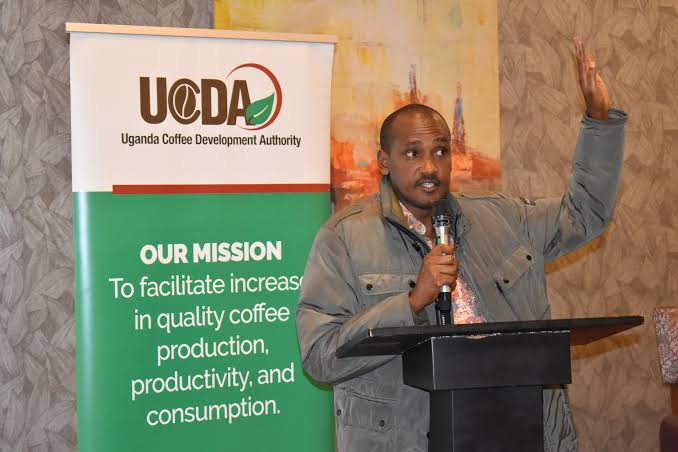
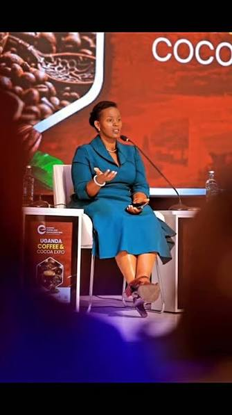
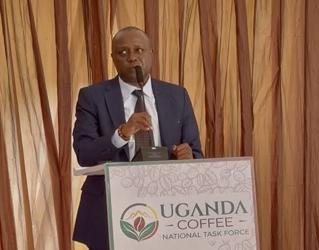
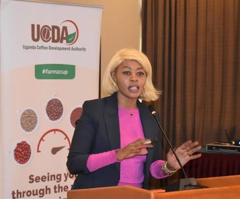

Learn from experts shaping the future of the coffee industry.

Uganda Agricultural Research Institute
Dr. James Okello is an agricultural research specialist with experience in coffee development and crop improvement. She works with farming communities to promote modern and sustainable agricultural practices.

Uganda Coffee Development Programme
Sarah specialises in coffee production and agricultural business development. He supports farmers in improving productivity and adopting modern farming technologies.

National Coffee Quality Centre
Peter is an expert in coffee processing and quality management. She promotes high-quality coffee standards and better processing methods for local producers.

East African Coffee Traders Association
Grace has experience in international coffee markets and export development. She helps businesses understand global trade opportunities and international market requirements.
| Name | Organisation | Country | Session Title |
|---|---|---|---|
| Ms. Rebecca Achieng | African Coffee Institute | Kenya | Coffee Value Addition |
| Mr. David Nkurunziza | Burundi Coffee Board | Burundi | Regional Coffee Trade |
| Dr. Michael Otieno | Global Agriculture Research Centre | Tanzania | Climate-Smart Agriculture |
| Ms. Esther Kato | Uganda Farmers Association | Uganda | Supporting Smallholder Farmers |
Researchers, agricultural professionals, students and industry experts are invited to submit original papers on coffee production, processing, technology, sustainability and international trade.
Submissions should include a clear title, author details and an abstract summarising the research. Selected contributors will be invited to present their work during the expo.
| Milestone | Date | Status |
|---|---|---|
| Call for Papers Opens | 1 June 2026 | Completed |
| Submission Deadline | 15 August 2026 | Closed |
| Selected Papers Announced | 1 September 2026 | Completed |